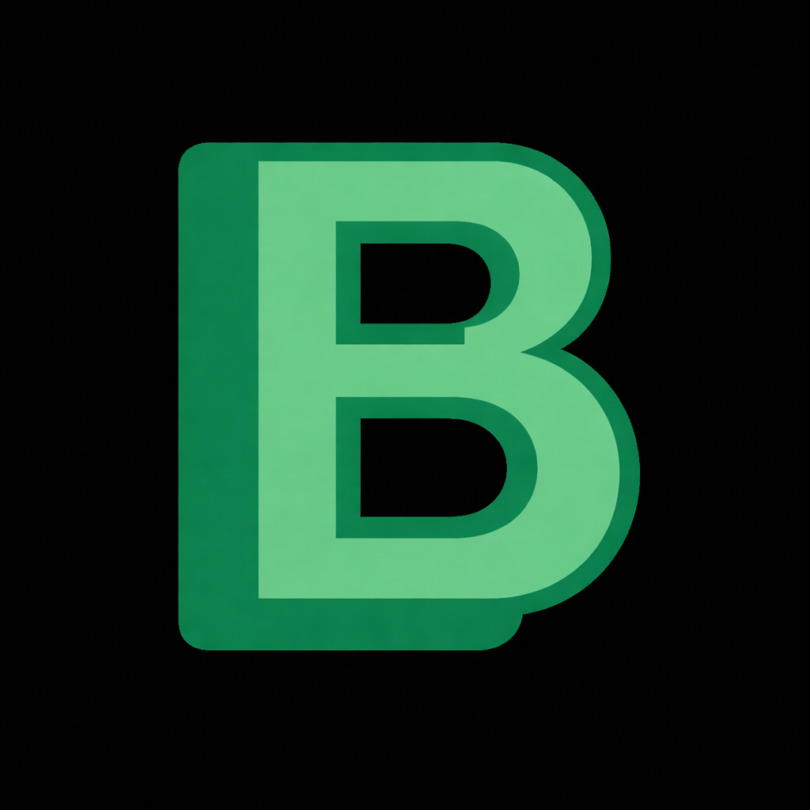

Disponible en : https://www.boonche.com

I. El problema
El mercado de aplicaciones para aprender idiomas nunca había sido tan grande ni tan accesible. Y sin embargo, el sesenta por ciento de los usuarios abandona antes de completar la primera semana. No por falta de motivación. Por falta de un sistema que funcione.
El estudiante promedio gestiona entre tres y cinco aplicaciones sin conexión entre ellas. Una para vocabulario. Otra para gramática. Una más para encontrar con quién practicar. El esfuerzo se fragmenta. El progreso se dispersa. Y cuando el costo de coordinar las herramientas supera la recompensa del avance visible, el abandono es la salida natural.
Hay un segundo problema. Las plataformas más populares fueron diseñadas para mantener al usuario activo dentro de ellas, no necesariamente para enseñarle a hablar. El vocabulario se memoriza pero nunca se usa. Y lo que no se usa se olvida. La neurociencia del aprendizaje lleva décadas documentando este principio: las palabras se consolidan en conversación, no en tarjetas. La mayoría de las plataformas disponibles hoy fueron construidas ignorando eso.
Boonche fue construido teniéndolo en cuenta.
II. Casos de uso
Andrea tiene veintidos años y estudia relaciones internacionales en Ciudad de México. Toma el camión cuarenta minutos cada mañana. En ese trayecto abre Boonche y repasa su mazo de vocabulario diplomático — palabras que encuentra en sus lecturas y que entiende por contexto pero no domina todavía. El sistema decide qué revisar cada día. Ella solo responde. Los martes practica con otro usuario. La semana pasada fue con un estudiante en Polonia. Hablaron quince minutos sobre política exterior. Valeria usó seis palabras de su mazo en esa conversación. Las recuerda todas.
Lukas tiene treinta y un años y trabaja como ingeniero de software en Praga. Aprende español por su cuenta en veinte minutos al mediodía y otros veinte por la noche. Por las mañanas estudia su mazo de vocabulario corporativo. Por las noches entra a una sala grupal donde cuatro personas practican español conversacional. El nivel del grupo es similar al suyo porque la plataforma organiza las salas por rango de dominio.
Hace un mes expuso en esa sala un tema de trabajo en español, ante tres personas de distintos países, y recibió correcciones en tiempo real. Dos semanas después participó en una reunión con el equipo de Buenos Aires sin que nadie tuviera que repetirle nada.
Yuna tiene veintisiete años y vive en Seúl. Trabaja en diseño y lleva dos años aprendiendo inglés para postularse a posiciones internacionales. Construyó tres mazos en Boonche: vocabulario creativo, expresiones informales, y frases de entrevistas de diseñadores que admira.
Una vez por semana reserva una sala para practicar una presentación corta en inglés. Los asistentes dejan comentarios al final. Yuna identifica los errores que se repiten y los convierte en nuevas tarjetas. Sus errores se convierten en material de estudio. El ciclo se cierra solo.
Andrea, Lukas y Yuna estudian idiomas distintos con objetivos distintos en contextos completamente diferentes. Los tres usan Boonche de una manera que se ajusta a su rutina, a su nivel y a lo que necesitan. Ninguno tuvo que construir un sistema propio para que eso funcionara. La plataforma lo organizó por ellos
III. El mercado
El mercado global de aplicaciones de aprendizaje de idiomas supera los seis mil millones de dólares en 2025. La proyección para 2033 es de veinticuatro mil millones. Trescientos dieciséis millones de aplicaciones de idiomas fueron descargadas en 2024. El cuarenta y ocho por ciento de los adultos entre dieciocho y veinticuatro años utiliza alguna plataforma de este tipo de manera activa.
El sesenta por ciento abandona antes de completar la primera semana.
Esa cifra no describe un problema de motivación. Describe un problema de diseño. Los usuarios llegan con intención genuina de aprender. Se van porque la experiencia no sostiene esa intención en el tiempo. La retención de usuarios es el problema central no resuelto en la industria, y su causa principal es la misma en la mayoría de los casos: el aprendizaje y la práctica están separados, y mantenerlos conectados requiere un esfuerzo que el usuario no debería tener que hacer.
IV. La propuesta
Boonche es una plataforma de aprendizaje de idiomas donde el vocabulario que se estudia tiene una salida práctica directa dentro del mismo sistema. El usuario no necesita cambiar de aplicación para pasar del estudio a la práctica. No necesita buscar interlocutores en otro lugar. No necesita construir un contexto desde cero cada vez que quiere hablar con alguien.
El principio de diseño es el siguiente: cada función de la plataforma está conectada con las demás. Lo que el usuario aprende informa cómo practica. Cómo practica determina lo que necesita estudiar a continuación. Y lo que crea puede servirle a otro usuario que está en el mismo punto del proceso.
Boonche no es la suma de varias herramientas dentro de una misma aplicación. Es un sistema donde esas herramientas operan como partes de un flujo único.
V. Las funciones
Boonches
La unidad fundamental de la plataforma es el boonche: un mazo de tarjetas de vocabulario que el usuario construye en torno a cualquier tema que le sea relevante. El vocabulario de su área profesional, las expresiones del país al que planea viajar, las palabras que encontró en un artículo o una serie y que entendió por contexto pero no domina todavía.
El sistema organiza los repasos mediante repetición espaciada. El usuario no ajusta parámetros ni decide cuándo revisar cada palabra. El sistema registra su rendimiento en cada sesión y determina el intervalo óptimo de revisión para cada tarjeta de manera automática. Las palabras consolidadas aparecen con menor frecuencia. Las que presentan dificultad regresan antes.
Diccionario integrado
La plataforma incluye un diccionario con más de treinta y cinco mil palabras. Cualquier término consultado puede agregarse directamente a un boonche existente. El contenido que el usuario consume fuera de la plataforma puede convertirse en material de estudio sin interrumpir lo que está haciendo.
Sesiones de práctica
Después de estudiar un conjunto de palabras, el sistema conecta al usuario con otra persona que estudió el mismo vocabulario o un tema relacionado. La conversación comienza con contexto compartido. Ambos participantes conocen el tema, tienen vocabulario en común y saben por qué están en esa sesión.
Salas grupales
Los usuarios pueden crear o unirse a salas de conversación grupal organizadas alrededor de un tema específico y un idioma meta. Las salas tienen estructura: un tema definido, un nivel de referencia, un moderador cuando la dinámica lo requiere. La práctica grupal desarrolla habilidades que la conversación individual no cubre, en particular la capacidad de seguir una conversación entre múltiples participantes y de intervenir de manera oportuna.
Exposición con retroalimentación
El usuario puede reservar un espacio para exponer un tema en su idioma meta ante otros miembros de la plataforma y recibir retroalimentación directa. Este formato replica una de las condiciones de uso real más exigentes: hablar en público en un idioma que no es el propio, sobre un tema con cierto nivel de complejidad, ante personas que pueden evaluar lo que se dice.
Publicaciones con correcciones
Los usuarios pueden publicar textos en su idioma meta y recibir correcciones de otros miembros con mayor dominio del idioma. La escritura como práctica deliberada, con retroalimentación humana integrada en el flujo de la plataforma.
Inteligencia artificial
La plataforma integra inteligencia artificial en funciones donde su aplicación produce un beneficio concreto y medible: traducción automática en la creación de boonches, sugerencias de vocabulario relacionado, y en fases posteriores, evaluación de pronunciación y generación asistida de mazos a partir de contenido externo. La inteligencia artificial no es el centro de la propuesta. Es una herramienta al servicio del aprendizaje humano.
Sistema de constancia
La regularidad en el estudio produce resultados que la intensidad ocasional no puede replicar. El sistema registra la actividad diaria del usuario y mantiene un indicador visible de continuidad. No es un mecanismo de gamificación. Es una representación del principio más documentado en la literatura sobre adquisición de segundas lenguas: la exposición constante y sostenida en el tiempo es el factor más determinante en el progreso.
VI. Modelo de acceso
Boonche opera bajo un modelo freemium. Las funciones centrales de la plataforma son gratuitas. Las funciones premium amplían la experiencia para usuarios con mayor nivel de uso o con necesidades específicas: sesiones de práctica ilimitadas, herramientas avanzadas de seguimiento, acceso anticipado a nuevas funciones y capacidades extendidas de inteligencia artificial.
En una fase posterior, la plataforma ofrecerá herramientas para instituciones educativas. Un profesor podrá crear mazos para su grupo, hacer seguimiento del progreso individual de cada alumno y organizar salas de práctica dentro del contexto de su clase. Este modelo institucional es la extensión natural de una plataforma que parte del estudiante individual y que a medida que crece incorpora los entornos donde ese estudiante también aprende.
VII. Estado actual y hoja de ruta
Boonche está disponible hoy en boonche.com como aplicación web progresiva. Funciona en cualquier dispositivo, puede instalarse en la pantalla de inicio del teléfono y opera sin conexión a internet para las funciones de estudio. Las funciones de vocabulario, diccionario, repetición espaciada y mazos compartidos están disponibles desde ahora.
Las sesiones de práctica estructurada se incorporarán en los próximos doce meses. Las salas grupales y las funciones de comunidad en el segundo año. Las herramientas institucionales a partir del tercer año.
El desarrollo sigue una lógica deliberada: primero consolidar el núcleo, después construir la práctica sobre ese núcleo, después abrir la práctica a la comunidad, después integrar la comunidad en entornos institucionales. Cada fase depende de que la anterior funcione bien. Ninguna se anticipa a la siguiente.
VIII. Conclusión
No se requiere más herramientas. Requiere que las herramientas correctas estén conectadas dentro de un mismo lugar, organizadas alrededor de un flujo que lleve al usuario del estudio al uso de manera natural y sostenida.
Eso es lo que Boonche hace.